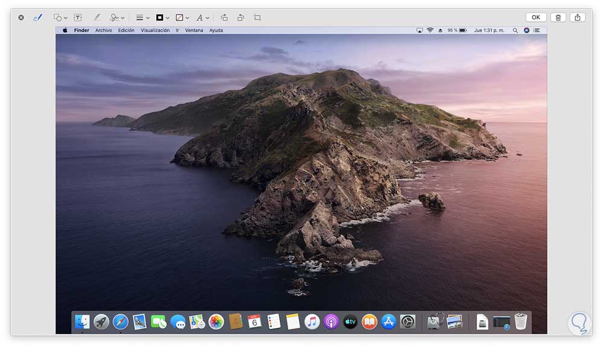
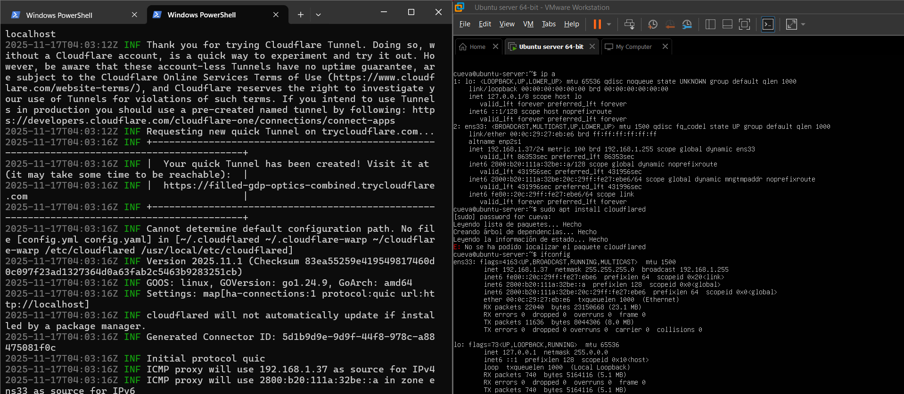

Máquina Virtual macOS Catalina
Se utilizó una máquina virtual con macOS Catalina como entorno cliente para acceder al servidor web.

Servidor Ubuntu 24.04 LTS
El servidor web corre en Ubuntu Server 24.04 LTS usando Apache2.
/var/www/Ubuntu-server

Tecnologías Utilizadas

Git + GitHub
Control de versiones y despliegue continuo.

VMware
Virtualización del entorno del proyecto.